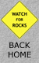

|
#173241 Joshua Tree Walker Pass, California A quintessential feature of the Mojave Desert, the presence of the Joshua Tree (Yucca brevifolia) in the Sierra Nevada suprises travelers heading over the southern terminus of the range at Walker Pass. |

|  | 
|
| This site Copyright © 1998 Mike Sisk, All Rights Reserved. No form of reproduction, including copying or saving of digital image files, or the alteration or manipulation of said image files is permitted. Any unauthorized use of these images will be prosecuted to the full extent of federal copyright laws. |